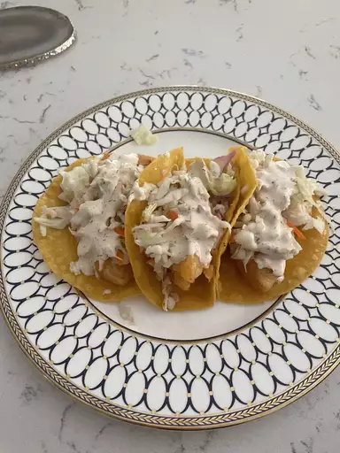

Fish Taco

Description
These crispy fish tacos with shredded cabbage and a spicy homemade white sauce are just delicious! Serve with homemade pico de gallo and lime wedges to squeeze on top.
Ingredients
- ½ medium head cabbage, finely shredded
- 1 quart oil for frying
- 1 pound cod fillets, cut into 2 to 3 ounce portions
- 1 (12 ounce) package corn tortillas